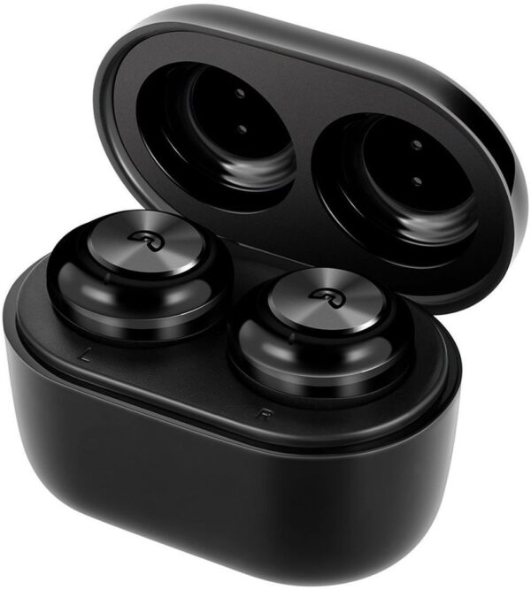

Welcome to belaidės ausinės
Belaidės ausinės | Įsigyk mūsų salone ar internetu
2020.10.30 03:23
Toggle navigation ☰ Gamintojai Acoustic Energy Audio-Technica Audiovector Beyerdynamic Bluesound Chord Cornered Audio Custom Design DALI Denon ELAC Elipson FiiO Gold Note Harbeth Hegel iBasso JAYS JL Audio KEF Klipsch Marantz Melodika NuPrime POLK Audio Pro-ject PYLON Audio Reloop HiFi Simply Analog TAGA Harmony Prekės Ekspozicijos išpardavimas Stereo aparatūra Stereo sistemos Stereo stiprintuvai Tinklo grotuvai Plokštelių grotuvai CD Grotuvai DAC (keitikliai) Mini HiFi Korekciniai stiprintuvai Namų kino aparatūra Namų kino sistemos Namų kino stiprintuvai Blu-ray / Media grotuvai Soundbar sistemos Kolonėlių komplektai Garso kolonėlės Kolonėlių komplektai Grindinės Lentyninės Centrinės Erdvinio garso Žemų dažnių Soundbar sistemos Nešiojamos kolonėlės Aktyvios Įmontuojamos Pakabinamos Lauko Belaidės sistemos Bluesound Denon Multiroom Audio Pro Ausinės Įstatomos į ausis Dedamos ant ausų Belaidės True Wireless Ausinių stiprintuvai Nešiojami grotuvai Kabeliai Kolonėlių kabeliai su antgaliais Matuojami kolonėlių kabeliai Tarpblokiniai HDMI kabeliai Skaitmeniniai Maitinimo Žemų dažnių kolonėlėms Mini Jack Antgaliai Baldai Spintelės aparatūrai Spintelės televizoriui Kolonėlių stovai Priedai Priedai Patefonų galvutės Vinilo priežiūra Instaliacijai Spygliai ir padukai Auto Aparatūra Grotuvai Garsiakalbiai Stiprintuvai DSP Procesoriai Kabeliai Priedai Išpardavimas Naujienos Kontaktai Informacija Apie mus Parkavimas Remonto paslaugos Apmokėjimo būdai TAX Free Krepšelis 0 items Jūsų krepšelis tuščias Kalba Kalba: Valiuta: EUR Prisijungti Mano paskyra Pirkti Pageidaujami Palyginti Įveskite ieškomos prekės pavadinimą
Belaidės ausinės
Pagrindinis Ausinės Belaidės ausinėsVisos prekės
Stereo aparatūra Stereo komplektai Stereo stiprintuvai Tinklo grotuvai Plokštelių grotuvai CD Grotuvai DAC (keitikliai) Mini HiFi sistemos Korekciniai stiprintuvai Namų kino aparatūra Namų kino sistemos Namų kino stiprintuvai Blu-ray / Media grotuvai Garso kolonėlės Kolonėlių komplektai Grindinės kolonėlės Lentyninės kolonėlės Centrinės kolonėlės Erdvinio garso kolonėlės Žemų dažnių kolonėlės namams Soundbar sistemos Nešiojamos kolonėlės Aktyvios kolonėlės Įmontuojamos kolonėlės Pakabinamos kolonėlės Lauko kolonėlės Išmanios garso kolonėlės Belaidės sistemos (Multiroom) Bluesound DENON Multiroom Audio Pro Multi-room Ausinės Dedamos ant ausų (on-ear) Įstatomos į ausis (in-ear) Belaidės ausinės True wireless Ausinių stiprintuvai Nešiojami grotuvai Bluetooth imtuvai ausinėms Kabeliai garso aparatūrai Kolonėlių kabeliai su antgaliais Matuojami kolonėlių kabeliai Tarpblokiniai kabeliai HDMI kabeliai Skaitmeniniai kabeliai Maitinimo kabeliai Kabeliai žemų dažnių kolonėlėms Mini Jack Antgaliai Baldai Spintelės aparatūrai Spintelės televizoriui Kolonėlių stovai Priedai Priedai garso aparatūrai Patefonų galvutės Vinilo priežiūra Instaliacijai Spygliai ir padukai kolonėlėms Auto-audio Grotuvai automobiliams Garsiakalbiai Komponentiniai garsiakalbiai Bendraašiai garsiakalbiai Žemų dažnių garsiakalbiai Žemų dažnių kolonėlės automobiliams Garsiakalbiai pagal automobilį Stiprintuvai DSP procesoriai Kabeliai auto-aparatūrai Priedai automobiliams Išpardavimas Naudota HiFi garso aparatūra Ekspozicijos išpardavimasPrekių ženklai
GERAIFiltruoti pagal
Spalva
Spalva
Juoda (12) Balta (6) Pilka (4) Rožinė (1) Ruda (2)Prekės ženklas
Prekės ženklas
Audio-Technica (10) Beyerdynamic (1) DALI (2) DENON (3) JAYS (4) Klipsch (2)Svoris
Svoris
0kg - 1kg
Kaina
Kaina
45,00 € - 399,00 €
Belaidės ausinės
Belaidės ausinės suteikia pilną judėjimo laisvė ir yra itin mėgiamos aktyvų laisvalaikį propaguojančius žmones. Jokių laidų, tik Jūs ir muzika.
Mes siūlome tik aukštos kokybės ausines, todėl galite būti tikri, kad net ir belaidės ausinės leis mėgautis puikia garso kokybe bei patikimai tarnaus ilgą laiką.
Ieškantiems visiškai belaidžio sprendimo - siūlome True Wireless ausines.
Rasta 24 prekės(-ių).
Rikiuoti pagal: Pavadinimas, A - Z Aktualumas Pavadinimas, A - Z Pavadinimas, Z - A Kaina, mažiausia - didžiausia Kaina, didžiausia - mažiausia Filtras Rodoma 1-20 iš 24 prekės(-ių)Aktyvūs filtrai
Greita peržiūraAudio-Technica ATH-ANC300TW triukšmą slopinančios...
249,00 € Aukštos kokybės "true wireless" tipo belaidės ausinės su aktyvia triukšmo slopinimo sistema. Maksimali baterijos trukmė vieno pakrovimo metu:... Greita peržiūraAudio-Technica ATH-ANC500BT belaidės ausinės su aktyviu...
99,00 € ATH-ANC500BT QuietPoint® belaidės ausinės naudoja aktyvią triukšmo slopinimo technologiją, užtikrinančią komfortišką muzikos klausymą net ir itin... Nauja Greita peržiūraAudio-Technica ATH-ANC700BT belaidės ausinės su triukšmo...
169,00 € Belaidės Bluetooth ausinės su aktyvia triukšmo slopinimo sistema. 25val baterijos tarnavimo laikas "QuitePoint" triukšmo slopinimo... Greita peržiūraAudio-Technica ATH-CK3TW true wireless belaidės ausinės
99,00 € Iki 6 valandų grojimo vienu pakrovimu Papildomos 24val grojimo naudojant pakrovimo dėžutę Valdykite muziką, skambučius bei garsą su... Greita peržiūraAudio-Technica ATH-CKS5TW True Wireless ausinės
159,00 € Baterijos tarnavimo laikas iki 15 valandų plius papildomos 30 valandų naudojant pakrovimo dėklą. Mygtukai abiejose ausinėse leidžia... -10,00 € Greita peržiūraAudio-Technica ATH-M50xBT ausinės su Bluetooth
189,00 € 199,00 € Legendinių M50X ausinių Bluetooth versija. Ypatingai švarus garsas ir jokių laidų 40 baterijos tarnavimo trukmė Valdymo mygtukai... Greita peržiūraAudio-Technica ATH-S200BT belaidės ausinės, uždedamos ant...
69,00 € Belaidės, uždaro tipo, dedamos ant ausų ausinės su mikrofonu. Švarus ir galingas garsas (40mm garsiakalbiai) Bluetooth® belaidis ryšys... Greita peržiūraAudio-Technica ATH-SPORT7TW True Wireless belaidės ausinės
199,00 € Aukštos kokybės True Wireless tipo ausinės su sensoriniu valdymu. Integruotas skambučių ir muzikos valdymas. Garso praleidimo iš išorės... Greita peržiūraAudio-Technica ATH-SR30BT belaidės ausinės
99,00 € Aukštos kokybės uždedamos ant ausų belaidės Bluetooth ausinės. 70 valandų balterijos tarnavimo laikas Valdymo mygtukai lengvai... Greita peržiūraAudio-Technica ATH-SR50BT belaidės ausinės
199,00 € Aukštos kokybės uždedamos aplink ausis belaidės, garsą slopinančios ausinės. 28 valandų baterijos tarnavimo trukmė Valdymo mygtukai... Greita peržiūraBeyerdynamic Aventho Wireless belaidės ausinės
369,00 € Hi-end lygio belaidės on-ear uždaro tipo ausinės. Aukštos kokybės belaidis garso perdavimas per Qualcomm® aptX™ HD, garso personalizavimas MIY... Greita peržiūraDALI IO4 bevielės ausinės
299,00 € Belaidės HiFi lygio ausinės su 60 valandų tarnaujančia baterija. Sukurtos maksimaliam komfortui, pasižymi tvirtu korpusu ir natūraliu bei skaidriu... Greita peržiūraDALI IO6 bevielės ausinės su triukšmo slopinimu
399,00 € Belaidės HiFi lygio ausinės su aktyvia triukšmo slopinimo sistema ir 30 valandų tarnaujančia baterija. Sukurtos maksimaliam komfortui, pasižymi... -60,00 € Greita peržiūraDenon AH-GC25NC ausinės su triukšmo slopinimu
239,00 € 299,00 € Aukštos klasės ausinės Aktyvaus triukšmo slopinimo funkcija, turinti tris režimus Aukštos raiškos garso apdorojimas 40mm FreeEdge... -40,00 € Greita peržiūraDenon AH-GC25W belaidės ausinės
209,00 € 249,00 € Ant galvos dedamos belaidės ausinės. Premium klasės bevielės ausinės Hi-Res garso našumas Specialūs garsiakalbiai Memory... -70,00 € Greita peržiūraDenon AH-GC30 ausinės su triukšmo slopinimu
279,00 € 349,00 € Premium klasės bevielės ausinės, turinčios triukšmo slopinimo funkciją. Gamintojo tinklapis Nauja Greita peržiūraJAYS a-Seven Wireless belaidės on-ear ausinės
99,00 € Lengvos ir patogios belaidės ausinės. 25 valandų baterijos tarnavimo laikas Patogios dėvėti Lengva aliuminio konstrukcija Greita peržiūraJAYS m-Seven Wireless tikros belaidės ausinės (earbuds)
129,00 € Tikros belaidės (true wireless) ausinės. Net iki 9,5val grojimo, Bluetooth 5.0 palaikymas ir galimybė valdyti balsu. Nauja Greita peržiūraJAYS q-Seven Wireless belaidės on-ear ausinės
149,00 € Belaidės ausinės su aktyvia triukšmo slopinimo sistema. 30val. baterijos tarnavimo laikas HearThrough technologija (leidžia girdėti... Nauja Greita peržiūraJAYS t-Four Wireless in-ear belaidės ausinės
49,90 € Nebrangios, tačiau kokybos belaidės in-ear tipo ausinės. 10 val baterijos tarnavimo laikas Sodrus žemas dažnis Puikus garso... Rodoma 1-20 iš 24 prekės(-ių) 1 2 Tęsti Atgal į viršų HiFi garso aparatūra. Projektavimas - Pajungimas - Servisas
Teikiame savo klientams kokybiškos garso aparatūros parinkimo, derinimo bei projektavimo paslaugas jau nuo 2013 metų. Projektuojame stereo, namų kino, multiroom bei "custom install" garso sistemas. Taip pat teikiame garso aparatūros remonto paslaugas.
Esame oficialūs Acoustic Energy, TAGA Harmony, PYLON Audio, Reloop HiFi, Custom Design, Simply Analog, Melodika gamintojų atstovai Lietuvoje.
Facebook YouTube Instagram
Informacija
Apie mus Sąlygos ir taisyklės Atsiskaitymas / Pristatymas Privatumo politika Tax-freeSusisiekite su mumis
Susisiekite su mumis Kauno g. 31, Vilnius Skambinti: +370 645 40688 El. paštas: [email protected]DARBO LAIKAS
I-V: 10:00 - 19:00 (p.p. 14-15val.)
VI: +370 645 40688
Sužinokite naujienas pirmieji!
Prenumeratos galėsite atsisakyti bet kuriuo metu. Tam tikslui mūsų kontaktinę informaciją rasite parduotuvės taisyklėse.
Newsletter © 2019 Sukurta UAB "Garso namai" . Visos teisės saugomos. close Shopping CartPrisijungti
Registruotis
Esamo vartotojo prisijungimas Prisijungti prie paskyros
Atstatyti slaptažodį
Naujo vartotojo registracija
UždarytiPrisijungti
Registruotis
Esamo vartotojo prisijungimas Prisijungti prie paskyros
Atstatyti slaptažodį
Naujo vartotojo registracija
Uždaryti